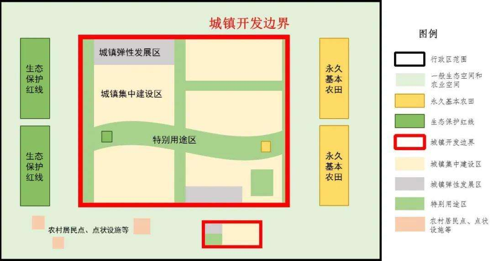
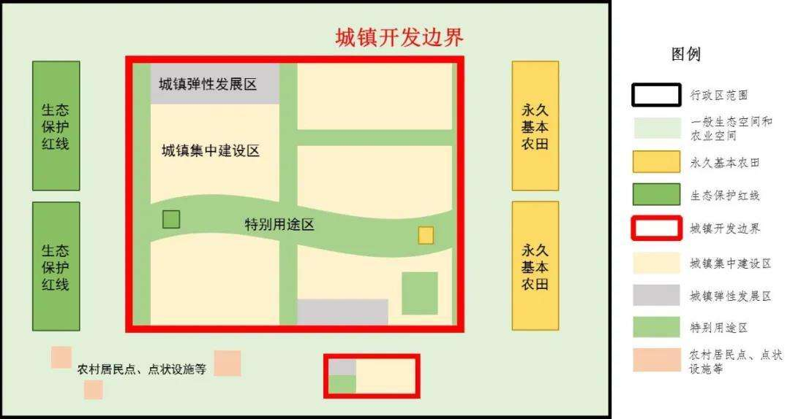
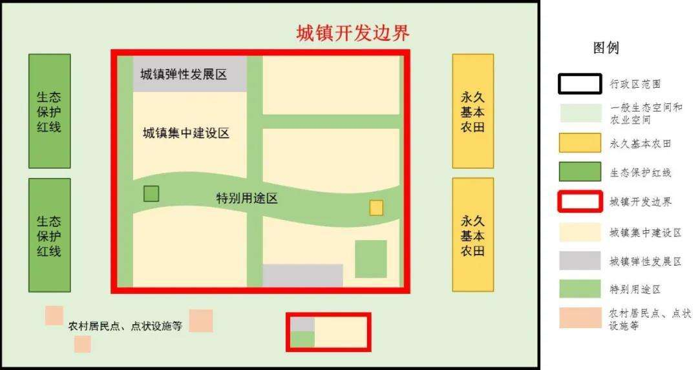

- diagrams of "Three areas and Three lines"
 

Urban space refers to the functional space mainly bearing urban economic, social, political, cultural, ecological and other elements. Agricultural space refers to the functional space dominated by agricultural production and rural life. Ecological space refers to the functional space mainly providing ecosystem services or ecological products.
The red line for ecological protection refers to land, water and sea areas that have special and important ecological functions within the ecological space and must be strictly protected. Permanent basic farmland refers to the cultivated land that cannot be occupied or changed in use according to the needs of population and economic and social development for agricultural products in a certain period and determined according to the territorial space planning. The boundary of urban development refers to the regional boundary of urban development, involving cities, administrative towns and various development zones, which can focus on urban development and construction in a certain period due to the needs of urban development.
